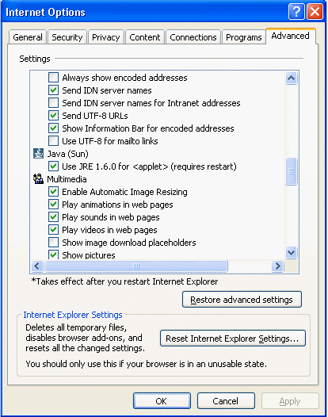

이 섹션에서는, 다음의 토픽에 대해 설명합니다.
개발자는, Java Plug-in 의 최종 사용자가 인스톨시 또는 인스톨 후의 어느 시점에 있어도,APPLET 태그를 유효 또는 무효로 할 수 있는 것에 주의할 필요가 있습니다.
인스톨 프로세스의 도중에, 사용자에게는 이하의 패널이 표시됩니다.
이 패널로 사용자는, Microsoft Internet Explorer 브라우저 또는 Mozilla 패밀리의 브라우저로 APPLET 태그를 처리할 때의 디폴트의 실행 환경으로서 JRE 또는 Java Plug-in 를 선택할 수 있습니다. 인스톨러는 Windows 레지스트리를 사용해 사용자의 머신에 이러한 브라우저가 인스톨 되고 있는지 어떤지를 판별해, 인스톨 되고 있는 브라우저의 체크 박스에 디폴트로 체크 마크를 붙입니다.
사용자는, 인스톨 후에 Java Plug-in 컨트롤 패널의 [브라우저］ 패널을 사용해,APPLET 태그 지원를 유효 또는 무효로 할 수 있습니다.
Microsoft Internet Explorer 상에서는,「인터넷 옵션」윈도우의「상세 설정」탭을 사용해, Java Plug-in 에 의한 APPLET 태그 지원를 유효/무효로 할 수도 있습니다. (「툴」> 「인터넷 옵션」> 「상세 설정」탭)

Java Plug-in 에서는, 표준의 인스톨 위저드 외에 사일런트 인스톨도 지원하고 있습니다. 사일런트 인스톨은, 예를 들어, 대규모 배치를 실행할 때에 사용됩니다. Java Plug-in 의 사일런트 인스톨에 관한 일반적인 정보는,「사일런트 인스톨」을 참조해 주세요.
사일런트 인스톨은 위저드에 의한 인스톨과 달리, 최종 사용자의 머신상의 모든 브라우저로 디폴트로 APPLET 태그 지원가 유효하게 될 것은 없습니다. 사일런트 인스톨의 실행시에 APPLET 태그 지원를 유효하게 하려면 , 이하의 커멘드행 옵션의 어느 쪽인지 또는 양쪽 모두를 사용하지 않으면 안됩니다.
IEXPLORER=1
- 이 플래그가 인스톨러에게 건네졌을 경우, Microsoft Internet Explorer 브라우저에 대해서 APPLET 태그 지원가 유효하게 됩니다.
MOZILLA=1이 플래그가 인스톨러에게 건네졌을 경우, Mozilla 패밀리의 브라우저에 대해서 APPLET 태그 지원가 유효하게 됩니다.